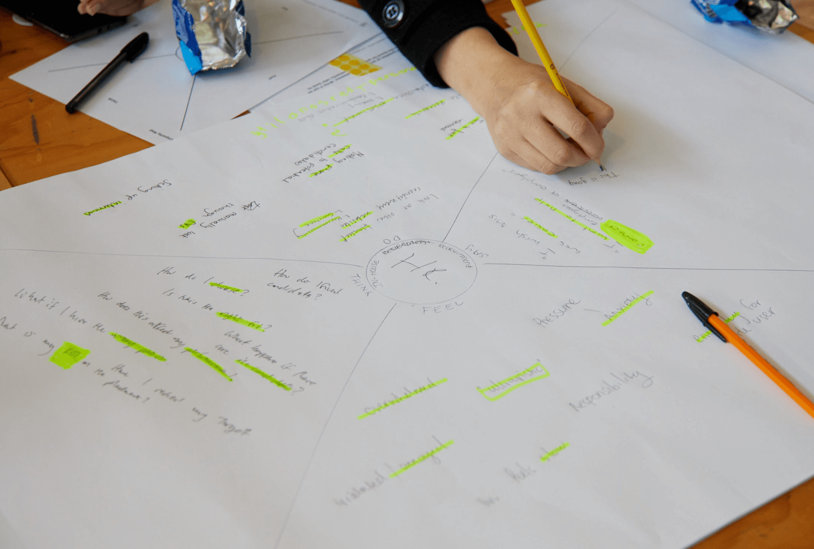
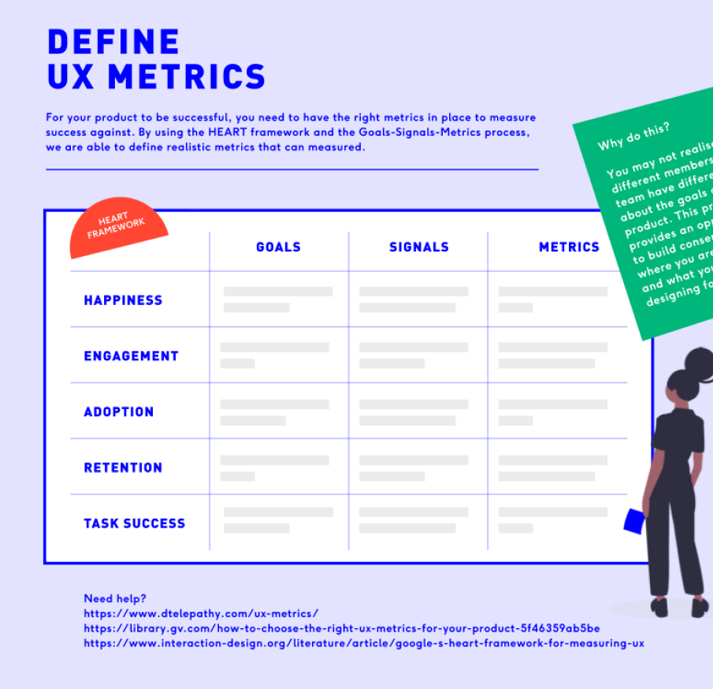
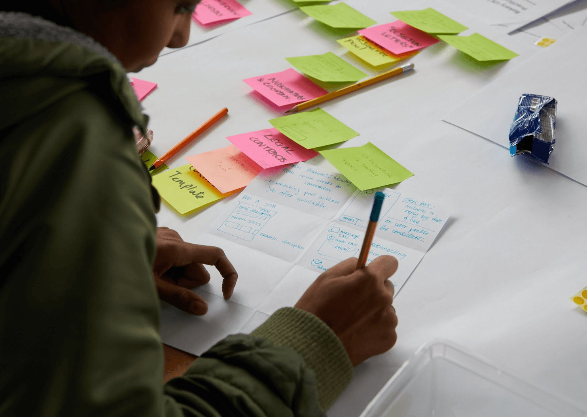

Back
My Design Process
Design Sprints
I use Design Sprints to better understand users and their problem. A Design Sprint is a time-constrained, six-phase process that allows teams to rapidly prototype and test ideas. This method, which has been refined through practice, is particularly effective in quickly validating ideas and solutions with real users.
*All images displayed on this page are from my Design Workshops.
1. Understand
1.1 Problem Statement
1.2 How Might We's
1.3 Experience Map
1.4 Stakeholder & Experience Interviews
1.5 Empathy Map
1.6 Assumptions and Questions
2. Define
2.1 Long Term Goals
2.2 Success Metrics
2.3 Identify Key Concepts
3. Sketch
3.1 Crazy 8's
3.2 Crazy 8 Voting
3.3 Solution Sketches
4. Decide
4.1 Solution Sketch Voting
4.2 Update Assumptions and Questions
5. Prototype
5.1 Storyboard
5.2 Wireframes
5.3 Paper Prototype
5.4 Clickable Prototype
6. Validate
6.1 User Testing
6.2 Stakeholder Review
6.3 Revisit your designs
1. Understand (the problem)
1.1 Problem Statement
The problem statement is a concise description of the issue that the design sprint aims to address. It serves as a guiding light for the entire process, ensuring that everyone on the team is aligned with the core challenge. Crafting a clear problem statement involves synthesizing insights from initial research and defining the scope of the problem. It sets the foundation for focused and purposeful design efforts.
1.2 How Might We's
The "How Might We" (HMW) approach reframes challenges into opportunities by transforming problems into open-ended questions. For example, instead of stating "Users are frustrated with the checkout process," we might ask, "How might we make the checkout process more enjoyable for users?" This method fosters a positive, solution-oriented mindset and encourages the team to think creatively about potential improvements.


1.3 Experience Map
An experience map visualizes the user's journey through the product or service, highlighting interactions, emotions, and pain points. By creating an experience map, the team can identify critical moments that impact the user's experience. This holistic view helps in understanding the context of the problem and uncovering areas that require design interventions.
1.4 Stakeholder & Experience Interviews
Conducting interviews with stakeholders and users provides firsthand insights into the problem. Stakeholders offer perspectives on business goals, constraints, and success criteria, while users share their experiences, needs, and frustrations. These interviews help in building a comprehensive understanding of the problem from multiple angles and ensure that the design solutions are grounded in real-world contexts.
1.5 Empathy Map
An empathy map captures what users think, feel, say, and do, creating a nuanced understanding of their experiences. This tool helps the team to empathize with users, uncovering underlying motivations and emotional drivers. By visualizing user emotions and behaviors, empathy maps guide the design process to address not just functional needs but also emotional and psychological aspects of the user experience.

1.6 Assumptions and Questions
Listing assumptions and questions helps the team identify gaps in knowledge and potential biases. Assumptions are beliefs held without evidence, and questioning them is crucial for validating the design direction. By documenting these assumptions and formulating questions, the team can prioritize areas for further research and ensure that the design process is driven by evidence rather than speculation.
2. Define (the outcome)
2.1 Long Term Goals
Establishing long-term goals provides a strategic vision for what the team aims to achieve through the design sprint and beyond. These goals should be ambitious yet attainable, aligning with both user needs and business objectives. By setting clear long-term goals, the team ensures that their efforts are focused on creating lasting impact and guiding future development. This clarity helps in maintaining alignment and motivation throughout the sprint.
2.2 Success Metrics
Success metrics are quantifiable measures that indicate whether the design solutions meet the defined goals. These metrics can include user engagement rates, task completion times, user satisfaction scores, and other relevant data points. Defining success metrics early in the process provides a benchmark for evaluating the effectiveness of the solutions. It ensures that the team can objectively assess the outcomes and iterate based on data-driven insights.

2.3 Identify Key Concepts
Identifying key concepts involves synthesizing insights gathered during the "Understand" phase to uncover emerging patterns and themes. This task helps the team recognize recurring issues, user needs, and potential opportunities. By distilling these key concepts, the team can create a focused and cohesive design direction. This step ensures that the design efforts are not fragmented but instead are grounded in a deep understanding of the problem space.
3. Sketch (your ideas)
3.1 Crazy 8's
The Crazy 8 exercise is a rapid ideation technique designed to push the team beyond their initial ideas and explore a broad range of possibilities. Each participant folds a sheet of paper into eight sections and sketches one idea per section in eight minutes. This time constraint encourages quick thinking and prevents overanalyzing. The goal is to generate a variety of concepts, some of which may be unconventional or unexpected, sparking innovative solutions.


3.2 Crazy 8 Voting
After the Crazy 8 exercise, the team reviews all the sketches and votes on the most promising ideas. Each participant uses dot stickers or another voting method to indicate their favorite concepts. This democratic process helps in identifying ideas with the most potential and ensures that all team members have a voice in the selection. It fosters a sense of ownership and collaboration, as the team collectively narrows down the options.
3.3 Solution Sketches
Building on the top-voted ideas from Crazy 8, participants create more detailed solution sketches. These sketches should clearly illustrate the concept, focusing on the user experience and key interactions. Each solution sketch provides a visual representation of how the idea would work in practice, making it easier to evaluate and compare. This step allows the team to dive deeper into the most promising ideas and refine them before making a final decision.
4. Decide (on a solution)
4.1 Solution Sketch Voting
In this step, the team reviews all the detailed solution sketches and votes on the best one(s). Each team member votes on the sketches they believe have the highest potential to solve the problem effectively. This structured decision-making process helps in prioritizing ideas that align with the defined goals and success metrics. The outcome is a clear, team-backed decision on which solution to prototype and test.
4.2 Update Assumptions and Questions
With a chosen solution in hand, the team revisits and updates their assumptions and questions. This ensures that any new insights or considerations from the sketching and voting process are integrated. Updating these assumptions and questions helps in preparing for the prototyping phase, as the team can focus on validating the most critical aspects of the solution. It also keeps the team aligned on what needs to be tested and why.
5. Prototype (you solution)
5.1 Storyboard
The storyboard is a detailed, step-by-step plan that outlines how the prototype will function and what it will look like. It starts with identifying key moments and interactions that the prototype needs to convey. The team collaboratively sketches a sequence of frames that depict the user’s journey through the solution. This visual representation helps ensure that everyone is aligned on what will be built and provides a clear blueprint for the prototyping process. By mapping out the user experience, the storyboard helps in focusing on the most critical aspects that need to be tested.
5.2 Wireframes
Building on the insights from the paper prototype, the team creates wireframes to define the structure and layout of the solution. Wireframes are more detailed and digitally produced, offering a clearer view of the design’s functionality and navigation. They focus on the placement of elements, content hierarchy, and user interactions without getting into the finer details of visual design. Wireframes help in refining the design and ensuring that the prototype will provide a realistic user experience.
5.3 Paper Prototype
The paper prototype is a low-fidelity, quick, and cost-effective way to bring the storyboard to life. Using simple materials like paper and markers, the team creates basic versions of the screens and elements of the solution. This allows for rapid iteration and easy modifications based on immediate feedback. The paper prototype serves as an initial tangible representation of the idea, enabling the team to visualize and interact with the concept in a physical form before investing time in more detailed prototypes.

5.4 Clickable Prototype
The clickable prototype is a high-fidelity version that simulates the user experience more closely. Using tools like Figma, the team creates an interactive prototype that users can click through. This prototype mimics the final product’s look and feel, allowing for realistic usability testing. It includes interactive elements, transitions, and user flows that provide a comprehensive understanding of how the solution will work in practice. The clickable prototype is essential for gathering meaningful feedback during the validation phase.
6. Validate (your idea)
6.1 User Testing
User testing is the core activity in the validation phase, where the prototype is tested with real users to gather feedback. This involves observing users as they interact with the prototype and asking them to complete specific tasks. The goal is to identify usability issues, understand user behavior, and gather qualitative insights into how well the solution meets user needs. User testing sessions are typically recorded and analyzed to pinpoint areas of improvement. This feedback is invaluable for iterating on the design and ensuring it aligns with user expectations.
6.2 Stakeholder Review
After user testing, the prototype is reviewed with key stakeholders to gather their input and ensure that the solution aligns with business objectives and constraints. Stakeholders might include project sponsors, product managers, and other team members who have a vested interest in the project’s success. Their feedback provides a broader perspective, considering aspects like feasibility, market fit, and alignment with strategic goals. This review helps in balancing user needs with business requirements and refining the solution accordingly.
6.3 Revisit your designs
Based on the feedback from user testing and stakeholder review, the team revisits and refines the design. This involves iterating on the prototype to address any identified issues, improve usability, and better meet user needs. The process of revisiting designs may include making changes to the user interface, adjusting functionalities, or even rethinking certain aspects of the solution. The goal is to iteratively improve the design, ensuring that the final product is user-centered, effective, and aligned with both user and business goals.
Copyright @ 2024